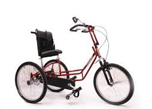
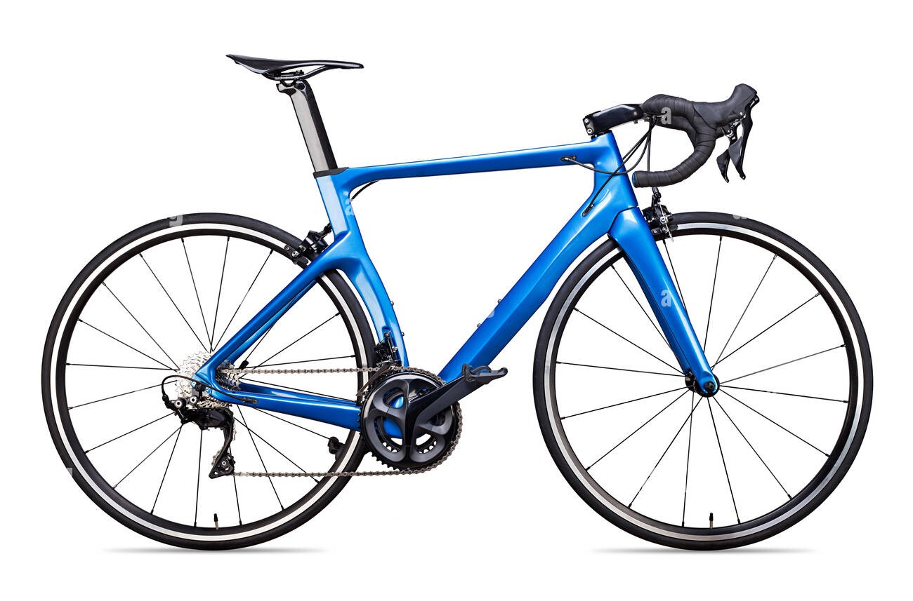
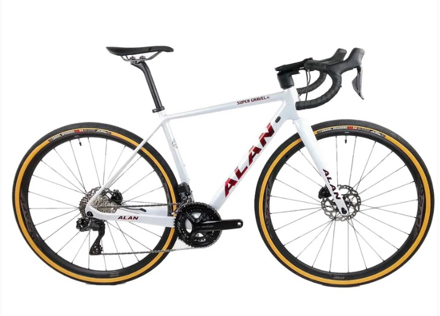
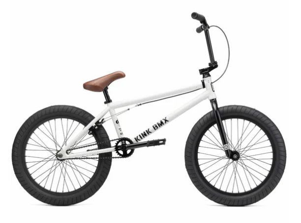
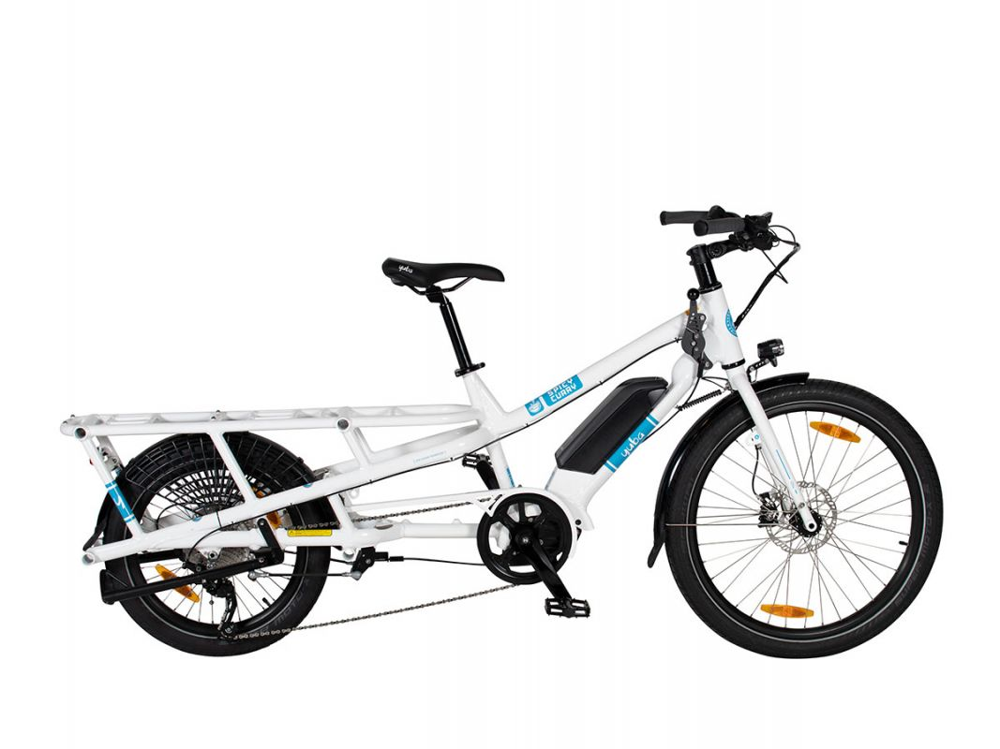
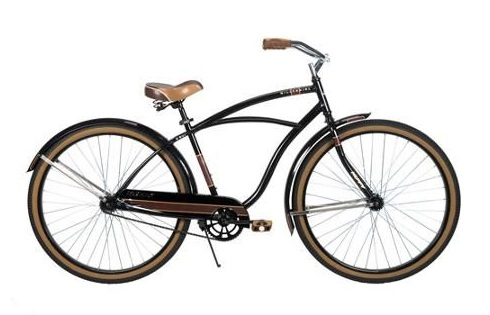
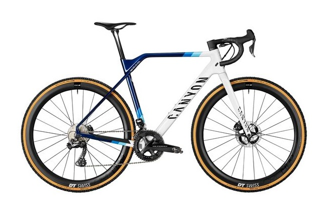
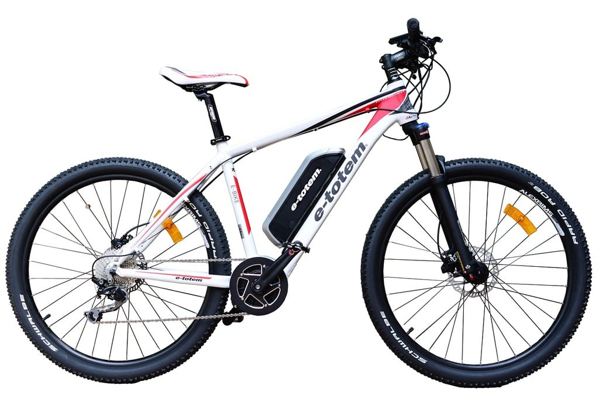
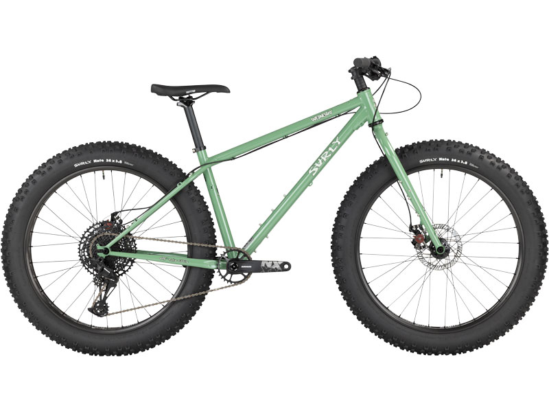
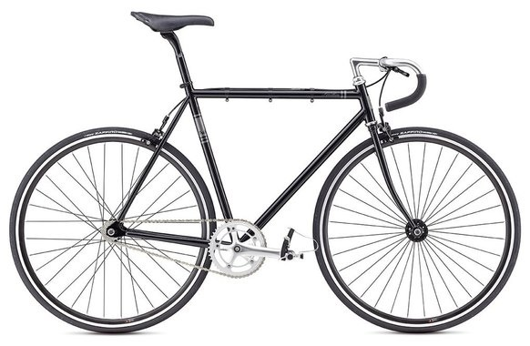

Two Wheels, One Soul
Freedom on every pedal stroke
Freedom on every pedal stroke
| Illustration | Type | Description | |
|---|---|---|---|
|  | Adaptive Bike | makes it possible for nearly everyone to experience the joy and freedom of bicycling they may take the form of trikes, hand cycles, tandem recumbents, side-by-side recumbents and more models seem to come onto the market all the time |
Know More |
|  | Aero Road Bike | take many of the aerodynamic features of a time trial (TT) bike and put them into a more of a regular road race frame this does ten to add a bit of weight compared to a race frame; however aero advantages can help save time or reduce the amount of power required to maintain a given speed produced in carbon, these bikes feature similar geometry and material lay up as a race frame; expect a low and fast position; cables tend to be hidden out of the air - running internally through the inside of the frame coupled with a set of deep section wheels they can offer impressive time savings; the gearing is similar to race bikes (high for more speed and finishing kit is usually lightweight and aero styled) |
Know More |
|  | Adventure Bike | sometimes called super gravel bikes or off-road touring bikes, are gravel bikes that have even more tire clearance and mounting points for racks and bags often allow for a more aggressive, wide, knobby tire like a mountain bike tire to aid in traction and comfort built for long-distance, multi-day adventures by bike |
Know More |
|  | BMX Bike | short for bicycle motocross type, has a unique shape; millennial's favorite bike usually have wheels that are not as big as racing or fixie bikes, small and slightly tilted frames, and low seats the design is made to make it easier for users who usually do freestyle actions on stairs, benches, or the edges of parks or other places in urban areas has high handlebar, low seat, small wheels with thick tires; suitable for young people who like freestyle |
Know More |
|  | Cargo Bike | has helped many families replace a car (or even go completely car free), transport weeks worth of groceries or other large/heavy items you wouldn't think to carry on other bicycles, transport children, pets, and even adults, or just look cool crusing around ride like a traditional bike and can maneuver with ease; can accommodate kids and any other gear you might be towing; however, the pilot may not be able to keep an as-attentive eye on any passengers or cargo since it's all behind them front loading cargo bikes are great for families; the carrying capacity is comparatively large, and they're easy to load up and hit the road; steering of front loading bikes can take a little getting used to, but once you learn it becomes second nature |
Know More |
|  | Cruiser Bike | also often called "beach cruisers" have upright geometry; ideal for short, leisurely rides on paved trails or boardwalks tend to come with fun extra like fenders, kickstands, and baskets not well suited for longer rides; only pick a cruiser bike if you're planning on biking short distances around town-or to the beach |
Know More |
|  | Cyclocross Bike | designed for a special type of racng called "cyclocross" - they are a special type of hybrid bike that looks like a road bike, but has knobby tires that can handle being ridden thru mud and across grass | Know More |
|  | Electric Bike | uses an electric motor to assist your pedaling these bikes are slowly being adapted to many types of riding and can be a great option to help keep up with faster riders, or for a boost in speed can be found in nearly any bike styles; if choosing a mountain e-bike be careful to check trail regulations as many trails do not allow for any motorized transport (which includes e-bikes) |
Know More |
|  | Fat Bike | feature tires that are 4 inches in width; provide great traction and floation for sand and snow, but can also be comfortable and fun on trails for mountain bikes often used as beach cruisers or riding on snow in the winter; they are most often found in mountain bike or cruiser bike styles |
Know More |
|  | Fixed-gear Bike | also known as fixie, are not fitted with a freewheel, which means that the rear wheel is locked to the rear cog you can pedal forward and backward, but you cannot coast or freewheel on a fixed gear normally don't have brakes either (although many riders add one on for safety reasons), and so you slow down and stop by pulling baack on the cranks to slow down the rear wheel experienced fixie riders will stop the rear wheel while riding and skid to a stop, but this is definitely something you'll want to practice |
Know More |
 |
Folding Bike | really easy to fold allowing them to conveniently fit in you car's trunk, a boat, or on a subway they make for great travel companions; consist of small wheels usually being 20-inches that can easily ride through potholes and bumps making up for a smooth ride come standard with adjustable functions on the handlebar, folding frame and saddle, enabling an easier folding process most folding bikes also consist of adjustable latches that help make the bike collapse easy |
Know More |
| BMX Bike | # # |
Know More | |
| BMX Bike | # # |
Know More | |
| Gravel Bike | # | # | |
| Hybrid Bike | # | # | |
| Kids Bike | # | # | |
| Mountain Bike | # | # | |
| Road Bike | # | # | |
| Tandem Bike | # | # | |
| Time Trial Bike | # | # | |
| Touring Bike | # | # | |
| Track Bike | # | # | |
| Triathlon Bike | # | # | |
| Other Bikes | # | # | |